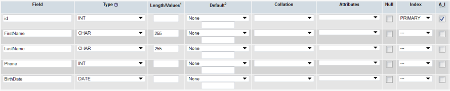

Lição 18: Criando Banco de Dados e suas Tabelas
Na lição anterior aprendemos como se conectar com um Banco de Dados. O próximo passo é aprender como criar Banco de Dados e Tabelas.
Veremos duas maneiras de se criar Bancos de Dados e Tabelas. Primeiro com uso de PHP e depois de uma maneira mais amigável usando a ferramenta PhpMyAdmin que existe por padrão na maioria dos servidores remotos e também no XAMPP.
Se você tem um servidor remoto com PHP e MySQL e já criou um Banco de Dados pule esta parte da lição e vá para criação de Tabelas. Para mais informações consulte o suporte do seu servidor.
Criar Banco de Dados e Tabelas com PHP
A função mysql_query é usada para enviar umna consulta (query) para o Banco de Dados MySQL. Consultas são escritas n linguagem Structured Query Language (SQL) (ou Linguagem estruturada de consulta). SQL é a linguagem mais usada para consultas a um Banco de Dados - não só para MySQL - e é lógica e muito fácil de aprender. Nesta e na próxima lição você aprenderá a sinbtaxe para realizar as mais usadas consultas SQL.
Para criar um Banco de Dados a query SQL usada é CREATE DATABASE que admite a seguinte sintaxe:
CREATE DATABASE nome do Banco
Bem lógico não é!? Vamos criar um script PHP:
mysql_connect("mysql.myhost.com", "user", "sesame") or die(mysql_error());
mysql_query("CREATE DATABASE mydatabase") or die(mysql_error());
mysql_close();
Primeiro a conexão com o Banco de Dados. A seguir criamos o Banco de Dados denominado "mydatabase". Finalmente encerramos a conexão.
Até aqui tudo bem... mas as tarefas se complecam um pouco quando se trata de criar Tabelas com PHP. Para isso usamos a query SQL CREATE TABLE com a seguinte sintaxe:
CREATE TABLE nome da Tabela ( nome_coluna1 DATA_TYPE, nome_coluna3 DATA_TYPE, nome_coluna4 DATA_TYPE, ... )
nome da Tabela e nome_coluna são, sem dúvida, o nome da Tabela e da coluna respectivamente. DATA_TYPE é usado para especificar o tipo de dado a ser inserido na coluna. Os tipos de dados mais usados são:
- INT
- Para números inteiros
- DECIMAL
- Pra números decimais
- CHAR
- Textos com menos de 255 caracteres
- TEXT
- Para texto com menos de 65.535 caracteres
- LONGTEXT
- Para texto com menos 4.294.967.295 caracteres
- Date
- Para datas no formato YYYY-MM-DD
- Time
- Para hora no formto HH:MM:SS
- DATETIME
- Para data/hora no formato YYYY-MM-DD HH:MM:SS
Lógico e fácil. Vejamos um exemplo:
mysql_connect("mysql.myhost.com", "user", "sesame") or die(mysql_error());
mysql_select_db("people") or die(mysql_error());
mysql_query("CREATE TABLE MyTable (
id INT AUTO_INCREMENT,
FirstName CHAR,
LastName CHAR,
Phone INT,
BirthDate DATE
PRIMARY KEY(id)
)") Or die(mysql_error());
mysql_close ();
Começamos com a conexão com o servidor MySQL. A seguir usamos a função mysql_select_db para selecionar o Banco de Dados denominado "people". Depois criamos a Tabela denominada "persons" contendo 5 colunas.
Notar que para a coluna "id" usamos INT para especificar que a coluna conterá números inteiros e a seguir usamos AUTO_INCREMENT para definir que os números serão incrementados automaticamente, garantindo que cada linha da coluna tenha um ID único (exclusivo, ou seja, que não se repete)
Finalmente usamos PRIMARY KEY para definir a coluna "id" como chave primária. A chave primária é o identificador exclusivo da cada registro (linha) da Tabela. Este identificador será de grande utilidade para manipulação dos registros.
Criar Banco de Dados e Tabelas com phpMyAdmin
Pode ser bastante útil criar Banco de Dados e Tabelas com PHP. Porém, em geral, será bem mais fácil usar phpMyAdmin (ou qualquer outra ferramenta administrativa para MySQL) que existe por padrão na maioria dos servidores remotos e em XAMPP. As figuras mostradas a seguir esclarecem como criar Banco de Dados e Tabelas no phpMyAdmin.
Comece fazendo login no phpMyAdmin. Em geral o endereço é o mesmo do servidor MySQL (por exemplo: "http://mysql.myhost.com") bem como o nome de usuário e senha. No XAMPP o endereço é: http://localhost/phpmyadmin/.
Uma vez logado, digite um nome para o Banco de Dados e clique o botão "Create":
Em alguns servidores remotos já existe um Banco de Dados padrão e não é permitida a criação de outros Banco de Dados. Se este for o seu caso, use o Banco de Dados padrão.
Para criar uma Tabela clique na aba "Databases" e escolha o Banco de Dados na qual a Tabela será criada:
Procure a caixa denominada "Create new table in database" e nela digite o nome da Tabela e o número de colunas. Clique o botão "Go":
A seguir define o nome das colunas, o tipo de dado em cada uma delas, etc. tal como mostramos anteriormente.

Notar que usamos "id" como PRIMARY KEY e AUTO_INCREMENT (A_I).
Assim, criamos nosso Banco de Dados e sua Tabela. Nas próximas lições aprenderemos como inserir, extrair e apagar dados de um Banco de Dados.